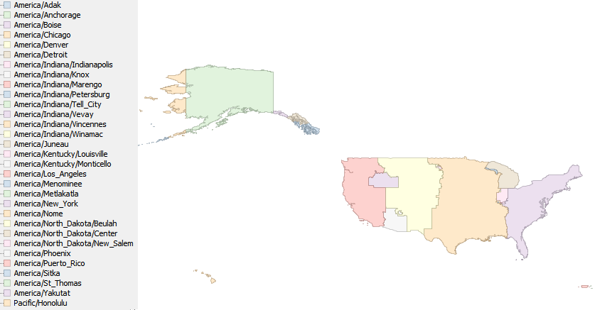

tz_us, an efele.net/tz map
A shapefile of the TZ timezones of the United States
Last data update: July 5, 2013
Last page update: July 5, 2013
The tz_us shapefile captures the boundaries of the TZ timezones of the United States, as of TZ 2012c.
The geometries are entirely derived from the countyp020p and timeznp020 shapefiles provided by the National Atlas.
All the TZ timezones of United States listed in TZ’s zone.tab are represented, except for America/Shiprock which is included in America/Denver.
Snapshot of the shapefile
This is a snaphsot of the shapefile.

Known problems
TZ mentions that America/Kentucky/Louisville contains three
counties of Indiana and part of Kentucky, but does not describe precisely that part of Kentucky. In the map, it is made of Jefferson county.
In general, towns on or near the boundary of a zone may practically follow the time of a neighboring zone. We do not attempt to record the boundaries at that level of detail. For example, the boundary between America/Los_Angeles and America/Denver follows the Nevada/Utah border; in practice and by law since 1999, the city of West Wendover, Nevada, is part of America/Denver.
Logical description of the zones
Except for the areas described below, the TZ timezone is determined from the legal timezone as follows:
- Eastern: America/New_York
- Central: America/Chicago
- Mountain: America/Denver
- Pacific: America/Los_Angeles
Alaska
- America/Adak: Alaska, with timeznp020.symbol = HA
- America/Yakutat: Yakutat City and Borough
- America/Juneau: Skagway-Hoonah-Angoon Census Area, Juneau City and Borough, Haines Borough
- America/Sitka: Wrangell-Petersburg Census Area, Sitka City and Borough, Ketchikan Gateway Borough, an unidentified area at the south of Ketchikan, bordering Canada, Prince of Wales-Outer Ketchikan Census Area less Metlakatla
- America/Metlakatla: the Metlakatla reservation, understood to cover the whole of Annette island, as well as a few nearby islands
- America/Anchrorage: rest of Alaska, east of 162°
- America/Nome: rest of Alaska, west of 162°
Arizona
- America/Phoenix: Arizona, less the Navajo lands
Hawaii
Idaho
- America/Boise: the part of Idaho legally in the Mountain Zone
Indiana
- America/Indiana/Marengo: Crawford county
- America/Indiana/Vincennes: Daviess, Dubois, Knox, and Martin counties
- America/Indiana/Tell_City: Perry county
- America/Indiana/Petersburg: Pike county
- America/Indiana/Knox: Starke county
- America/Indiana/Winamac: Pulaski county
- America/Indiana/Vevay: Switzerland county
- America/Kentucky/Louisville: Clark, Floyd, and Harrison counties.
- America/New_York: Dearborn and Ohio counties
- America/Chicago: Gibson, Jasper, Lake, LaPorte, Newton, Porter, Posey, Spencer, Vanderburgh and Warrick counties
- America/Indiana/Indianapolis: rest of Indiana
Kentucky
- America/Kentucky/Louisville: Jefferson county.
- America/Kentucky/Monticello: Wayne county
Michigan
- America/Menominee: Dickinson, Gogebic, Iron and Menominee counties
North Dakota
- America/North_Dakota/Center: North Dakota: Oliver county
- America/North_Dakota/New_Salem: North Dakota: Morton county
- America/North_Dakota/Beulah: North Dakota: Mercer county
Oregon
- America/Boise: the part of Oregon legally in the Mountain Zone
Puerto Rico
Virgin Islands
Construction of the shapefile
The zip of the ingredients contains a script to build the map, the modified sources.
The starting point is a couple of map layers from the National Atlas:
- the “County Boundaries, 2001” layer (description,
shapefile)
- the “Time Zones” layer (description,
shapefile). This
maps only captures the current time zones and does not include the
historical time zones recorded in TZ
Unfortunately, these two maps do not work well together: for
example, some common boundaries are not digitized in exactly the same
way. So the first step was to conflate them. For the County Boundaries
layer, the only change was to add intermediate points where a time
zone boundary departs from a county boundary. For the Time Zones
layer, the change was to replace the common boundaries by the data
from the County Boundaries. The resulting shapefiles are part of
the ingredients.
The next step is to perform an overlay of the two maps, to progressively assign a tzid to the geometries (identified by a combination of state, county and “modern” timezone, in accordance with the description above), and to finally dissolve on the tzid attribute. For the exact details of the assignments, see the script in the ingredients.
Terms of use
 To the extent possible under law, Eric Muller has waived all copyright and related or neighboring rights to the efele.net/tz maps (comprising the shapefiles, the web pages describing them and the scripts and data used to build them).
This work is published from the United States of America.
To the extent possible under law, Eric Muller has waived all copyright and related or neighboring rights to the efele.net/tz maps (comprising the shapefiles, the web pages describing them and the scripts and data used to build them).
This work is published from the United States of America.
Note that this does not affect the rights others may have. I am not qualified to determine whether such rights exist.
Contact - Thanks
History:
- July 5, 2013:
- some of the Aleutian islands were incorrectly in America/Adak rather than America/Nome. Thanks to Eric Michielli for reporting the problem.
- September 30, 2012:
- extended America/Metlakatla to cover the whole of Annette island and a few nearby islands. Thanks to James Diebel for pointing out this problem.
- June 25, 2012, updated for TZ 2012c:
- added America/Sitka and America/Metlakatla.
- fixed a small problem, thanks to Dan O’Neill
- February 7, 2011:
- added America/North_Dakota/Beulah
- fixes to the polygons of America/Winnipeg, thanks to Veeder South
- March 13, 2010:
- updated to TZ 2010e (no data change)
- November 14, 2009:
- Alaska is now handled properly, thanks information provided by Oscar van Vlijmen
- Jefferson County, Kentucky is now in America/Kentucky/Louisville
- added a logical description of the zones
- November 10, 2009: updated for TZ 2009r; added the terms of use.
- November 5, 2008: note on West Wendover, Nevada, thanks to Vernon Cole
- September 13, 2008: added the snapshot
- 2008: first version